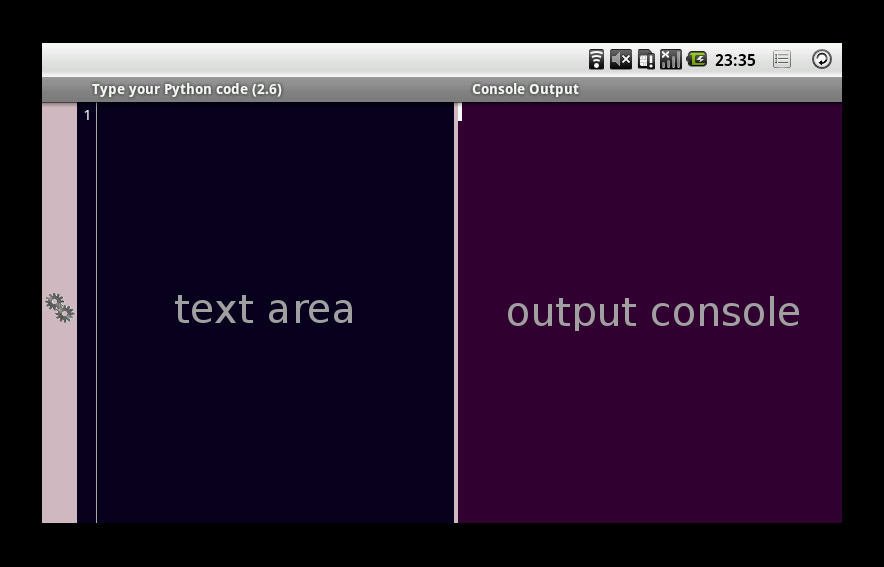
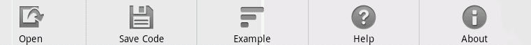
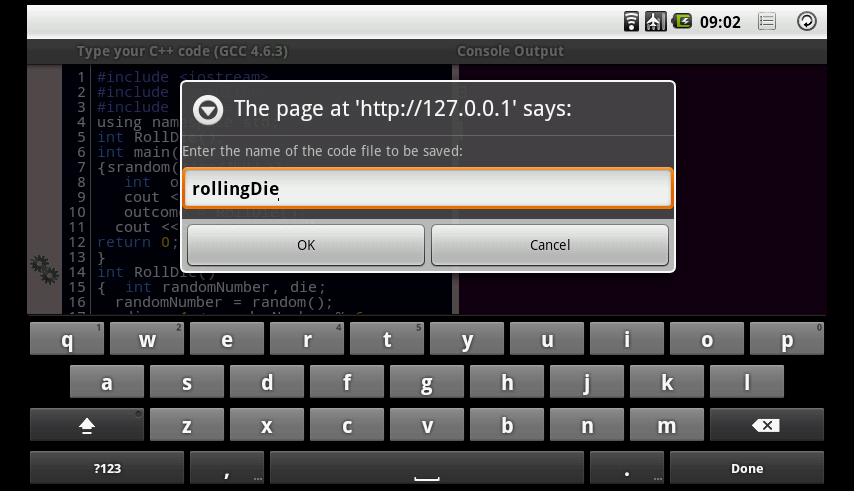
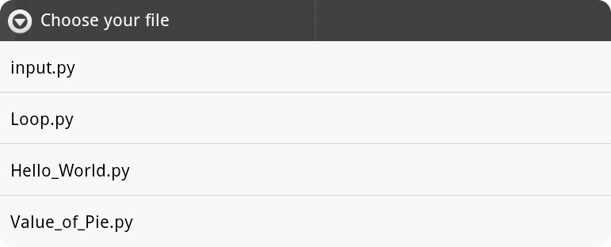
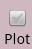
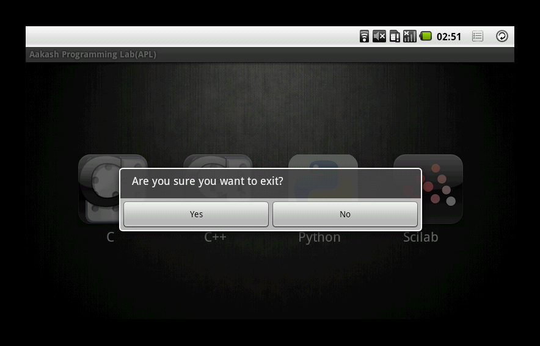
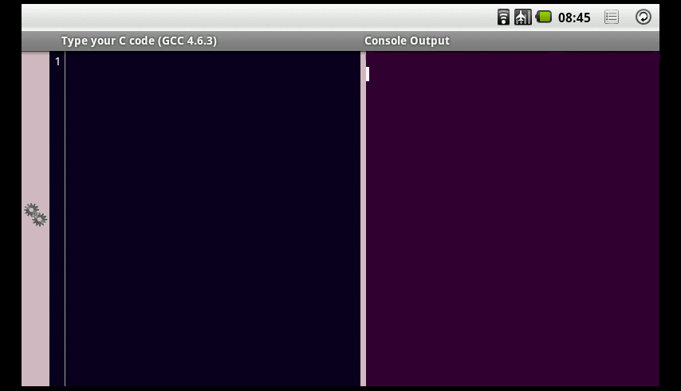
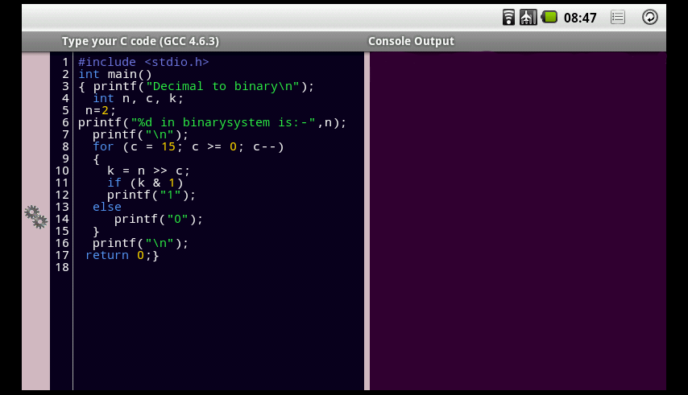
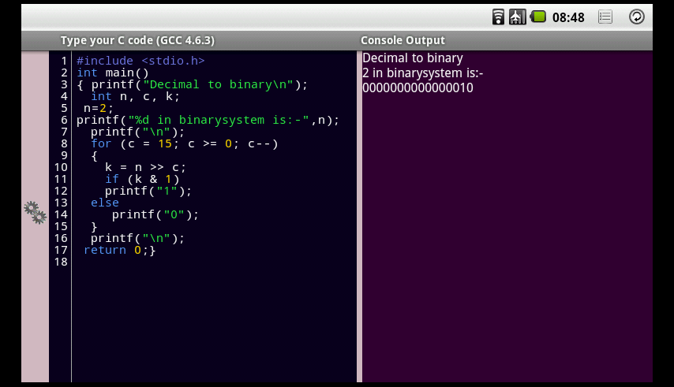

Using Aakash Programming Lab(APL)¶
Overview¶
- Locate and click on Aakash Programming Lab(APL) icon in application menu

Aakash Programming Lab Icon
- After clicking on APL icon, you will see a screen with four icons horizontally placed, naming C, C++, Python and Scilab
APL main page
In any of the above four option(C, C++, Python, Scilab) we have following common components.
Text editor: is located on the left hand side. One can write source code in text editor. If you click on the text editor area, a virtual keyboard will appear and one can use it to write programs. Click back button (located at right top corner on Android status bar) to close the virtual keyboard.
Text editor with console output
Console output: is located at right hand side, this will show the output of the program.
Back button
Execute button: is located on left side of text area. It is a small icon(looks like gears). After writing code in text editor, one can click on execute button to view output. The output will appear in console output screen(it should take approximately 2 to 10 seconds, depends upon code and algorithm).
Execute button
Example Programs: Clicking on the option button at top right corner, next to the back button will pop up the horizontal menubar from the bottom. One of the option is Example programs.
Option button
Menu bar with options
Save Code: The Save Code option will pop up a dialog box which ask’s for a file name. You don’t have to provide the file extension, it will be appended by-default. All codes will be saved in /mnt/sdcard/APL/ directory. Within the /APL/ directory, you can browse through respective language directory to view your code or an [image] file.
Saving the code
Click on the Example Programs button, it will show list of example programs. Click on any example to select. The example code will appear on text editor. Then click on the execute button to run. Output will appear in Console output. One can optionally edit the code in text editor and execute again.
List of examples
Scilab has one extra component, i.e plot option. This will appear at the bottom-left of the page. Check this option if your code has any plots involved. Uncheck when not needed. Most examples provided in Scilab have graphical output.
Plot - check box
One can switch back to other programming environment by clicking back button which will land you to Main page (step 2).
To exit APL one has to click back button twice, this will pop up one confirmation dialog box. Click Yes to exit Aakash Programming Lab
exit Aakash programming lab
C programming using APL¶
Text output
Locate and click on Aakash Programming Lab(APL) icon
Aakash Programming Lab Icon
After clicking on APL icon, you will see a screen with four icons horizontally placed, naming C, C++, Python and Scilab
APL main page
Click on C icon, this will land you in the C programming console.
C programmming console
Touch on Text area to pop up the virtual keyboard. Type your C code in the Text area.
Text area with code
and click on execute button to see the output in Console Output
Output of C code
| [image] | right now, only scilab has an additional directory called image beside code directory. The complete path is /mnt/sdcard/APL/scilab/image |